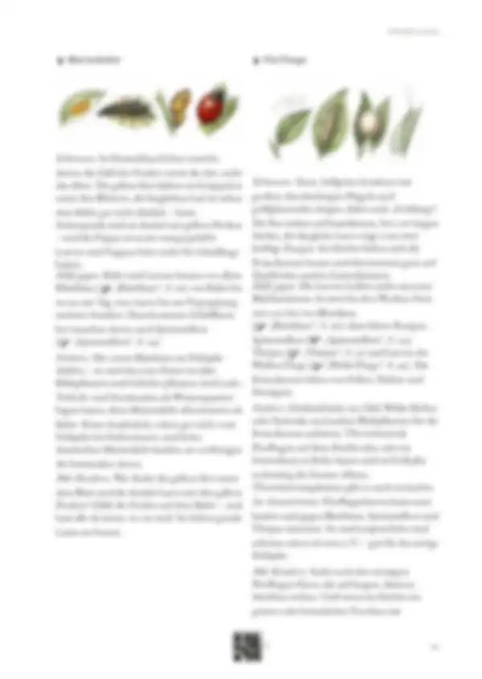
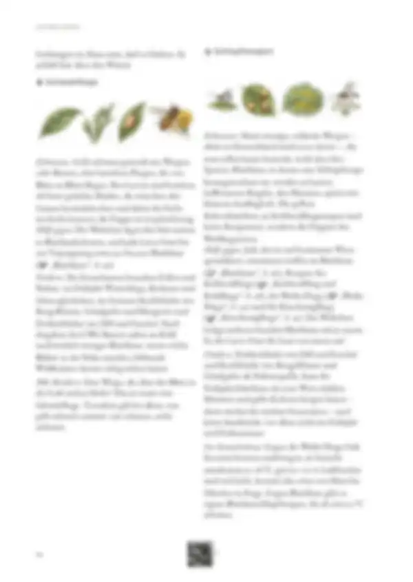
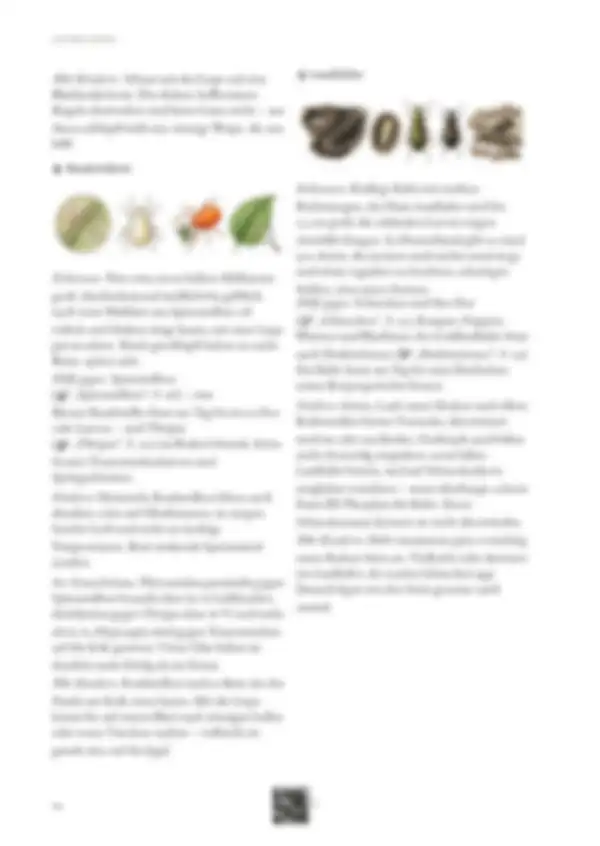
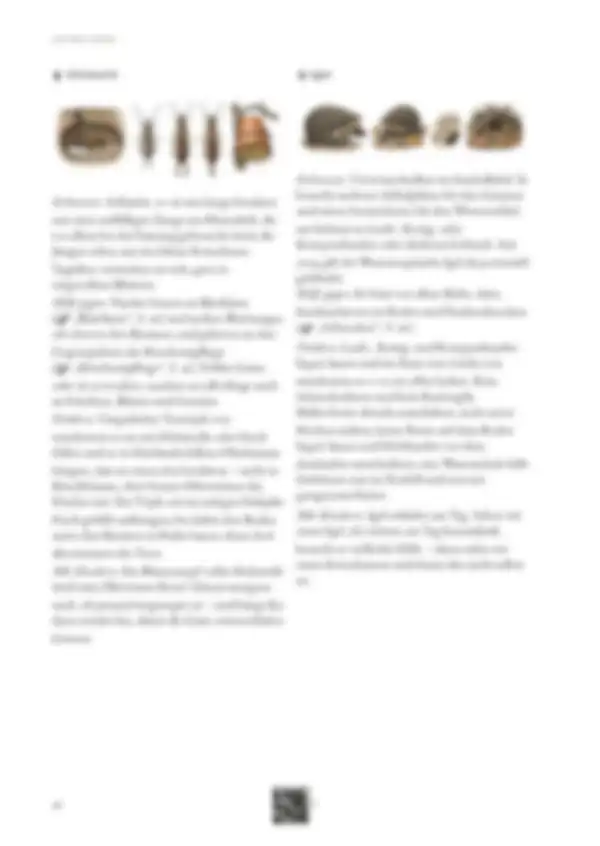
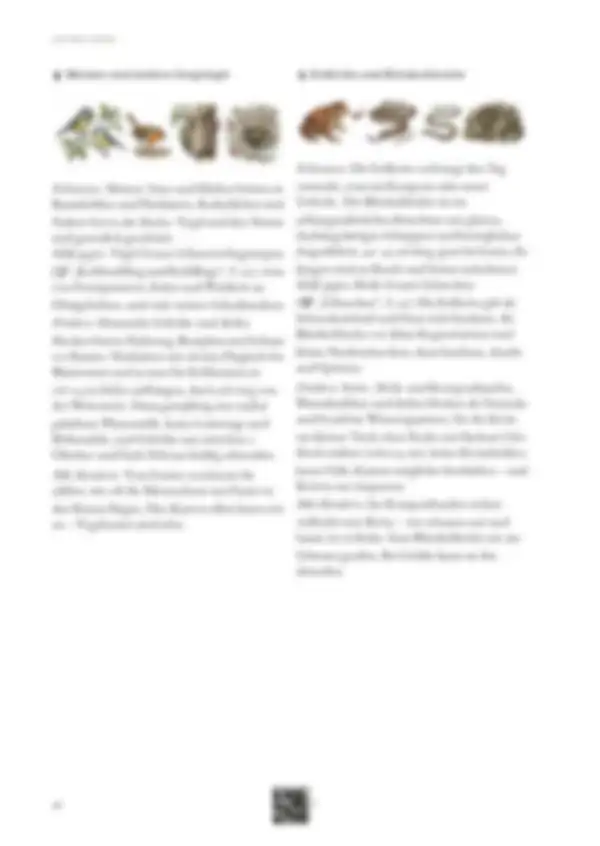

Tippe eine Quelle an, um zu sehen, wo sie verwendet wird – oder tippe auf einen Bereich der Seite.
12 Quellen dieser Abschnitt
Original · abgerufen am 26.10.2026 · ◐ ErfahrungVerwendet in: Einleitung, Florfliege, Schlupfwespen, Schwebfliege, Laufkäfer, Raubmilben, Igel, Erdkröte und Blindschleiche
Original · abgerufen am 26.10.2026 · ◐ ErfahrungVerwendet in: Einleitung, Marienkäfer, Schwebfliege, Igel, Meisen und andere Singvögel, Erdkröte und Blindschleiche
Original · abgerufen am 28.10.2026 · ◐ ErfahrungVerwendet in: Einleitung
Original · abgerufen am 26.10.2026 · ● belegtVerwendet in: Einleitung, Marienkäfer, Florfliege, Schlupfwespen, Schwebfliege, Laufkäfer, Raubmilben, Ohrwurm
Original · abgerufen am 26.10.2026 · ◐ ErfahrungVerwendet in: Einleitung, Marienkäfer, Florfliege, Schlupfwespen, Schwebfliege, Laufkäfer, Raubmilben
Original · abgerufen am 26.10.2026 · ◐ ErfahrungVerwendet in: Marienkäfer, Florfliege, Schlupfwespen, Schwebfliege, Raubmilben, Ohrwurm, Igel, Meisen und andere Singvögel, Erdkröte und Blindschleiche
Original · abgerufen am 26.10.2026 · ◐ ErfahrungVerwendet in: Florfliege, Laufkäfer, Ohrwurm, Igel, Meisen und andere Singvögel, Erdkröte und Blindschleiche
Original · abgerufen am 26.10.2026 · ● belegtVerwendet in: Schlupfwespen, Raubmilben
Original · abgerufen am 26.10.2026 · ● belegtVerwendet in: Schlupfwespen, Ohrwurm
Original · abgerufen am 26.10.2026 · ◐ ErfahrungVerwendet in: Meisen und andere Singvögel
Original · abgerufen am 28.10.2026 · ◐ ErfahrungVerwendet in: Meisen und andere Singvögel
Original · abgerufen am 26.10.2026 · ◐ ErfahrungVerwendet in: Erdkröte und Blindschleiche
● belegt (Versuch, Fachinstitut) · ◐ Erfahrung (Beratung, Praxis) · ○ Überlieferung. Abschnitte ohne eigene Quellenangabe in den Daten zeigen die Quellen der ganzen Seite („Seite allgemein“).